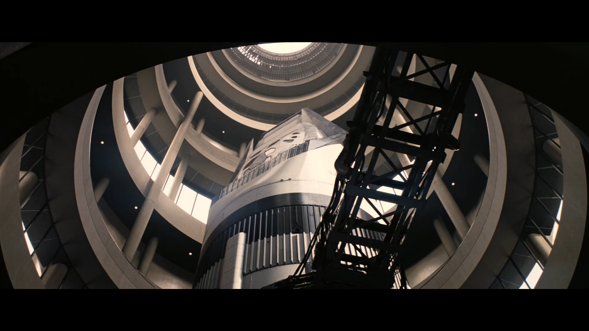
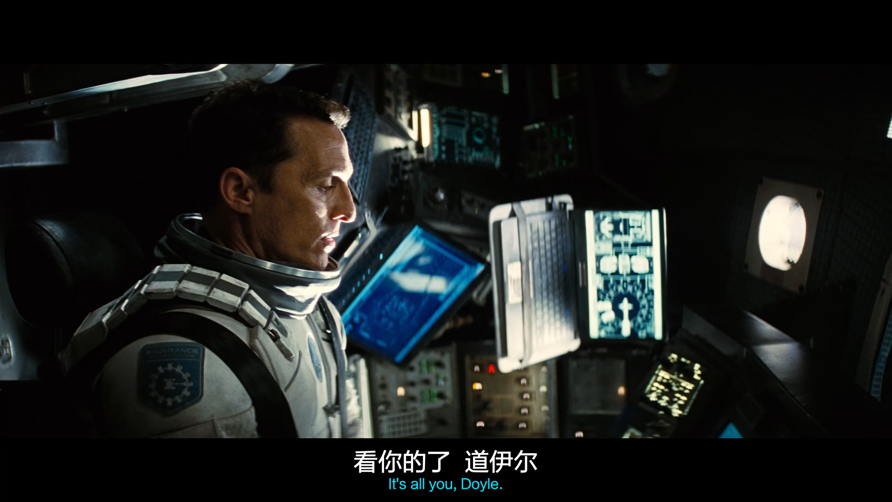
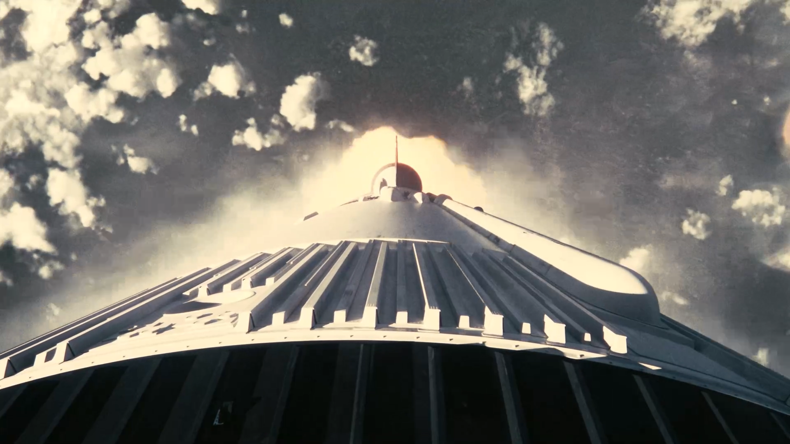
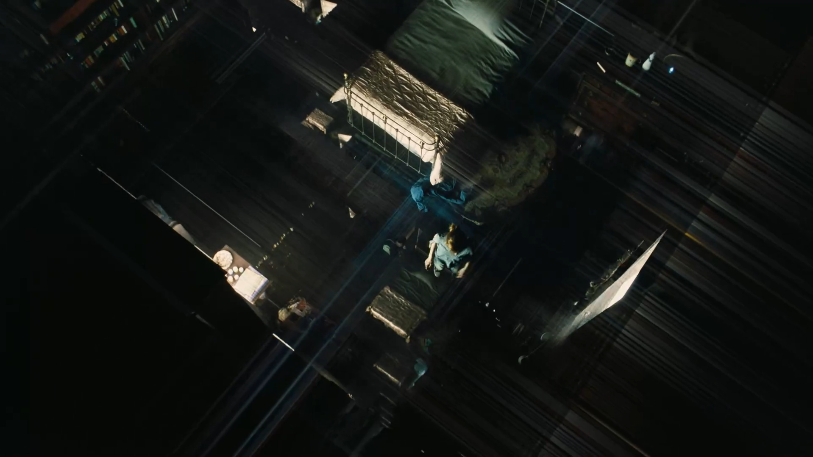
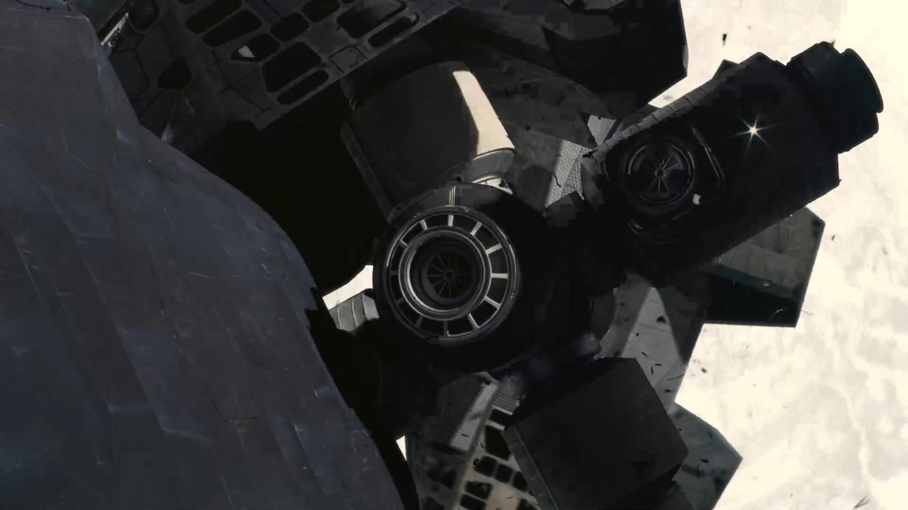
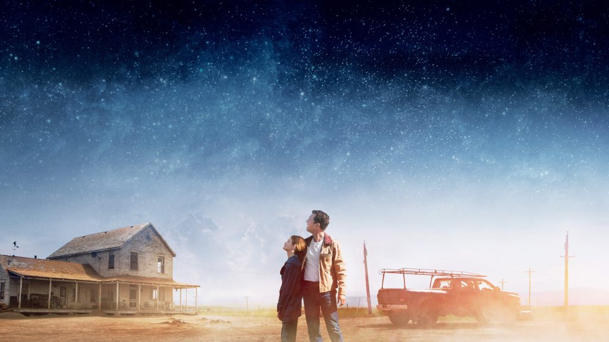

Best AI Website MakerIn Earth's future, a global crop blight and second Dust Bowl are slowly rendering the planet uninhabitable. Professor Brand (Michael Caine), a brilliant NASA physicist, is working on plans to save mankind by transporting Earth's population to a new home via a wormhole. But first, Brand must send former NASA pilot Cooper (Matthew McConaughey) and a team of researchers through the wormhole and across the galaxy to find out which of three planets could be mankind's new home.
Welcome to the world of Interstellar.
Directed by Christopher Nolan, this sci-fi masterpiece takes us beyond the boundaries of space and time — a desperate journey to save humanity from a dying Earth.
Blending science with emotion, Interstellar delivers breathtaking visuals, a powerful score, and a story that reminds us what it means to love, hope, and endure.
It’s not just a voyage through space — it’s a reflection on what it means to be human.
欢迎来到《星际穿越》的宇宙旅程。
这部由克里斯托弗·诺兰执导的科幻杰作，带领人类跨越时空的界限，在濒临崩溃的地球上，寻找新的希望与家园。
影片融合了科学与情感，用震撼的视觉与音乐讲述了关于时间、亲情与生存的故事。
这不仅是一场星际探险，更是一段关于“爱与选择”的思考。
Earth is dying. Crops are failing, dust storms rage, and humanity faces extinction.
Former NASA pilot Cooper is chosen for a secret mission: to travel through a wormhole and search for a new home among the stars.
As the crew ventures into the unknown, they confront the limits of time, gravity, and the human spirit.
For Cooper, it’s not just about saving humanity — it’s about keeping a promise to his daughter, to return.
Interstellar is both a breathtaking journey through space and a profound story about love, sacrifice, and survival.
地球正逐渐走向末日，农作物枯萎、沙尘暴肆虐，人类的未来岌岌可危。前NASA飞行员库珀被秘密招募，加入一项穿越虫洞的任务，前往遥远星系寻找人类新家园。
在漫长的旅程中，他们经历了时间的扭曲、空间的未知与人性的考验。
当库珀为拯救人类而远赴星际时，他也在与时间赛跑，只为兑现一个父亲的承诺——回到女儿身边。
《星际穿越》不仅是一场宇宙冒险，更是对爱与牺牲的深刻探索。
Interstellar was directed by visionary filmmaker Christopher Nolan, known for his complex storytelling and dedication to realism.
The film’s scientific foundation was guided by Nobel Prize-winning physicist Kip Thorne, ensuring the depiction of wormholes and black holes stayed true to real physics.
With groundbreaking visual effects and Hans Zimmer’s unforgettable score, the movie achieves both scientific authenticity and emotional depth.
Behind every frame lies a collaboration of art, science, and imagination — a true cinematic journey beyond the stars.
《星际穿越》由著名导演 克里斯托弗·诺兰执导（Christopher Nolan），他以独特的叙事手法与对科学细节的执着，让这部电影成为科幻影史的里程碑。
影片的科学理论由诺贝尔物理学奖得主 基普·索恩（Kip Thorne）担任顾问，确保虫洞、黑洞等现象都尽可能贴近真实物理。
视觉特效团队运用最先进的模拟技术，创造出令人震撼的宇宙景象，而汉斯·季默（Hans Zimmer）的配乐，则以深沉而恢宏的音色，赋予整部电影独特的灵魂。
从科学到情感，《星际穿越》的幕后团队共同打造了一次跨越时空的艺术奇迹。


Top-down
顶视构图




Best AI Website Maker